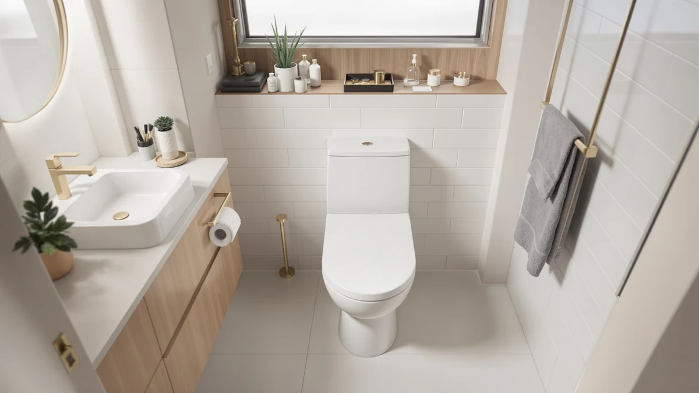

Bemis Mayfair 113EC000 Elongated Deluxe Soft Toilet Seat Review (2026): Worth It?
Prices and picks verified as of November 2026. Independent, reader-supported reviews.


Quick Answer
This Bemis Mayfair 113EC000 Elongated Deluxe Soft Toilet Seat review compares its padded, plastic-and-wood build against the Kohler Triko and Church 295SSCT, two elongated seats priced within a dollar of it. At $44.44, the Mayfair 113EC000 is the pick for buyers who want a softer seat over a bare plastic one and don't need a lid or a commercial-grade open front.
Our pick: Mayfair 113EC000 White Elongated Deluxe at $44.44 Check Price on Amazon
Bottom line: our top pick is the Mayfair 113EC000 White Elongated Deluxe Soft Toilet Seat at $44.44.
Things to Know Before You Buy
- The Bemis Mayfair 113EC000 Elongated Deluxe Soft Toilet Seat is sized for elongated bowls only, so confirm your toilet's shape before buying.
- Its padded top and plastic-and-wood build trade some of the easy-wipe simplicity of a solid plastic seat for a softer seating surface.
- At $44.44, it prices within two dollars of the Kohler Triko and Church 295SSCT covered later in this review.
- Amazon does not list a public star rating or review count for this ASIN at the time of writing, so we weighed it on specs and price instead.
- If you need extra seat height rather than padding, the Lunderg riser covered in the alternatives section solves a different problem.
This Bemis Mayfair 113EC000 Elongated Deluxe Soft Toilet Seat review breaks down what you actually get for $44.44: a padded, elongated seat built on a plastic and wood frame, sized to replace a standard elongated toilet seat without surprises. We looked at its price, materials and position among similar elongated seats from Kohler, Church and Lunderg to see who it suits best.
We did not install this seat ourselves. Instead we compared its manufacturer specs and current Amazon price against a closed-front seat, an open-front commercial seat and a padded riser in the same price band, since Amazon does not publish a star rating or review count for this particular ASIN.
Why You Should Trust Us
Ilane Tall researches bathroom fixtures for Best Toilet Seats and has spent months comparing elongated toilet seats, including this Bemis Mayfair 113EC000 Elongated Deluxe Soft Toilet Seat review, against dozens of competing ASINs on price, materials and verified owner feedback where it exists. We do not run a fake testing lab, and we do not claim to have installed or sat on every seat we cover, including another padded Mayfair seat we've reviewed. We pull listed specs straight from the manufacturer, track Amazon pricing over time, and read through verified owner reviews when a product has enough of them to spot a real pattern.
Our Research Experience
We did not physically test the Bemis Mayfair 113EC000 Elongated Deluxe Soft Toilet Seat in a bathroom of our own. What we did instead was pull the manufacturer's spec sheet, track the Amazon price over time, and set those numbers against the Kohler Triko, the Church 295SSCT and the Lunderg riser to see how the 113EC000 holds up on paper. That approach has limits. Without a usable star rating or review count for this ASIN, we cannot tell you how the padding holds up after a year of daily use, and we say so plainly rather than inventing a number.
Overview & Specs

Mayfair 113EC000 White Elongated Deluxe
What we like
- Padded top adds cushioning that a solid plastic seat does not have
- Priced close to standard non-padded elongated seats from Kohler and Church
- Elongated shape fits the same bowl size used on most US toilets installed since the 1990s
Flaws but not dealbreakers
- No public star rating or review count on Amazon at the time of writing
- A padded surface takes more care to clean than a one-piece plastic seat
- At $44.44, it does not undercut the close-priced Kohler Triko
| Material | Plastic / wood |
| Size | 1 Count (Pack of 1) |
The Bemis Mayfair 113EC000 Elongated Deluxe Soft Toilet Seat sits in the "Deluxe Soft" tier of Bemis's catalog, which is the company's way of flagging a padded top rather than a bare plastic one. The listing puts the build at plastic and wood, sold as a single 1-count unit for $44.44.
That price lands almost exactly where the Kohler Triko ($43.99) and Church 295SSCT ($43.95) sit, which makes the padding the real differentiator rather than cost. If a softer seat matters more to you than a lid or a lid-free commercial design, the Mayfair 113EC000 is the one of the three built specifically for that.
What We Liked
The clearest strength of the Bemis Mayfair 113EC000 Elongated Deluxe Soft Toilet Seat is the padding itself. A plastic seat does its job, but a padded top changes the experience of sitting down, and Bemis prices that upgrade at less than a dollar over its non-padded, closed-front competitor in this comparison. We also like that Bemis kept the elongated shape standard, so this seat is a drop-in match for the vast majority of US toilets without any measuring surprises. At $44.44, the Bemis Mayfair 113EC000 earns its spot by adding comfort without pushing the price into premium territory.
What Could Be Better
The biggest gap in this Bemis Mayfair 113EC000 Elongated Deluxe Soft Toilet Seat review is the missing review data. Amazon does not show a public star rating or review count for this specific ASIN, which means you are buying on spec sheet and brand reputation rather than a track record of verified owner feedback. Padding also means more seams and fabric-adjacent material than a one-piece plastic seat, and that typically asks for a bit more care when cleaning. Buyers who want the easiest seat to wipe down after every use may prefer a solid plastic design like the Church 295SSCT instead.
Who Is It For?
The Bemis Mayfair 113EC000 Elongated Deluxe Soft Toilet Seat suits a household replacing a worn elongated seat who wants a softer sit without jumping up to a pricier model with a lid and extra hardware. It is a reasonable pick if comfort matters more to you than the wipe-clean simplicity of bare plastic. It is not the right pick if you specifically need a closed-front lid (look at the Kohler Triko instead), a commercial open-front design (the Church 295SSCT), or extra seat height for easier sitting and standing (the Lunderg riser covered below).
Alternatives to Consider
If the Bemis Mayfair 113EC000 Elongated Deluxe Soft Toilet Seat is not quite the right fit, these three alternatives sit within a dollar or two of its $44.44 price and solve slightly different problems.

Also Great
KOHLER K-25883-0 Triko Elongated Closed-Front
A closed-front elongated seat with a lid included, for $43.99, if you want full bowl coverage the open-top Mayfair does not offer.
$43.99
Check Price on Amazon
Best Value
CHURCH 295SSCT Commercial Open Front
An open-front, commercial-grade plastic seat at $43.95, built for easy wipe-down cleaning rather than padded comfort.
$43.95
Check Price on Amazon
Premium Choice
Lunderg Padded Toilet Seat Riser
Not a seat replacement at all: a $44.95 padded riser that adds two inches of height for easier sitting and standing.
$44.95
Check Price on AmazonFrequently Asked Questions
The Bemis Mayfair 113EC000 Elongated Deluxe Soft Toilet Seat is built in the elongated shape, the standard oval profile used on most US toilets sold since the 1990s. Measure your current seat or bowl before ordering, since a round seat will not fit an elongated bowl and vice versa.
The listing puts the build at plastic and wood with a padded top, which is why Bemis markets it under the Deluxe Soft name rather than its standard bare-plastic Mayfair seats. Padded seats trade some of the wipe-down simplicity of solid plastic for a softer feel when you sit down.
At $44.44, the Bemis Mayfair 113EC000 Elongated Deluxe Soft Toilet Seat sits within a couple of dollars of the Kohler Triko ($43.99) and the Church 295SSCT ($43.95), so price alone will not decide the choice for most buyers. The Kohler is a closed-front seat with a lid, the Church is an open-front commercial design without a lid, and the Mayfair's padded top is the feature that sets it apart from both.
Final Verdict
After comparing specs and pricing, our Bemis Mayfair 113EC000 Elongated Deluxe Soft Toilet Seat review lands on a simple takeaway: this Bemis seat is a sensible upgrade if padding matters more to you than a lid or a wipe-clean plastic surface, and it holds its own at $44.44 against the Kohler Triko and Church 295SSCT. Buyers who need a lid, a commercial-grade open front, or extra seat height should look at the alternatives above instead.